Inclus dans ta commande
Le Guide du musée dans ta poche
100 pistes audio, une par tableau du livre. Ton enfant écoute l'histoire du tableau, puis une voix lui dit les couleurs une par une.
⬇ Télécharger les 100 pistes (64 Mo)Comment ça marche
1Ouvre le livre au tableau que ton enfant veut colorier.
2Cherche son numéro ici : c'est le numéro en haut à gauche de la fiche.
3Appuie sur ▶ et pose le téléphone. Il écoute, il colorie.
- 1 Saint François prêche aux oiseauxGiotto ⬇
- 2 La Fuite en ÉgypteGiotto ⬇
- 3 L'Adoration des magesGiotto ⬇
-
4
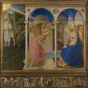
L'AnnonciationFra Angelico ⬇ - 5 Le Baptême du ChristPiero della Francesca ⬇
- 6 L'AnnonciationLéonard de Vinci ⬇
- 7 Le PrintempsSandro Botticelli ⬇
- 8 La Remise des clésLe Pérugin ⬇
- 9 La Dame à l'hermineLéonard de Vinci ⬇
-
10
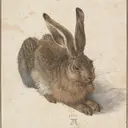
Le LièvreAlbrecht Dürer ⬇ - 11 La JocondeLéonard de Vinci ⬇
- 12 Le RhinocérosAlbrecht Dürer ⬇
- 13 Charles Quint à chevalTitien ⬇
- 14 La Tour de BabelPieter Bruegel l'Ancien ⬇
- 15 Les Noces de CanaPaul Véronèse ⬇
- 16 Les Chasseurs dans la neigePieter Bruegel l'Ancien ⬇
- 17 L'ÉtéGiuseppe Arcimboldo ⬇
- 18 Corbeille de fruitsCaravage ⬇
- 19 Paysage d'hiver avec patineursHendrick Avercamp ⬇
- 20 La LaitièreJohannes Vermeer ⬇
- 21 La Cour d'une maison à DelftPieter de Hooch ⬇
- 22 La Jeune Fille à la perleJohannes Vermeer ⬇
- 23 La Place Saint-MarcCanaletto ⬇
- 24 Le Retour du BucentaureCanaletto ⬇
- 25 Le Grand Canal et la SaluteCanaletto ⬇
- 26 Les Bulles de savonJean Siméon Chardin ⬇
- 27 Le Château de cartesJean Siméon Chardin ⬇
- 28 Régate sur le Grand CanalCanaletto ⬇
- 29 La Tamise à LondresCanaletto ⬇
- 30 WhistlejacketGeorge Stubbs ⬇
- 31 Le Garçon en bleuThomas Gainsborough ⬇
- 32 Le Voyageur contemplant une mer de nuagesCaspar David Friedrich ⬇
- 33 La Charrette de foinJohn Constable ⬇
- 34 Le Fuji rougeKatsushika Hokusai ⬇
- 35 La Grande VagueKatsushika Hokusai ⬇
- 36 La Boucle de la rivièreThomas Cole ⬇
- 37 Le Dernier Voyage du TéméraireWilliam Turner ⬇
-
38
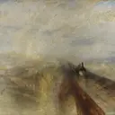
Pluie, vapeur et vitesseWilliam Turner ⬇ - 39 Le Monarque du glenEdwin Landseer ⬇
- 40 Bonjour Monsieur CourbetGustave Courbet ⬇
-
41
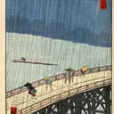
Averse soudaine sur le pont OhashiUtagawa Hiroshige ⬇ - 42 Le Jardin des pruniers à KameidoUtagawa Hiroshige ⬇
- 43 Des glaneusesJean-François Millet ⬇
- 44 Les Chutes du NiagaraFrederic Edwin Church ⬇
- 45 Souvenir de MortefontaineCamille Corot ⬇
-
46
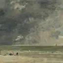
La Plage de TrouvilleEugène Boudin ⬇ - 47 Le FifreÉdouard Manet ⬇
- 48 Parmi les montagnes de la Sierra NevadaAlbert Bierstadt ⬇
- 49 La PieClaude Monet ⬇
- 50 La Mère de l'artisteJames McNeill Whistler ⬇
- 51 Impression, soleil levantClaude Monet ⬇
- 52 Le BerceauBerthe Morisot ⬇
- 53 Le Jeu de la chaîneWinslow Homer ⬇
-
54
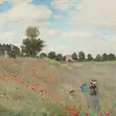
Les CoquelicotsClaude Monet ⬇ - 55 La Classe de danseEdgar Degas ⬇
-
56
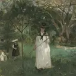
La Chasse aux papillonsBerthe Morisot ⬇ - 57 La Femme à l'ombrelleClaude Monet ⬇
-
58
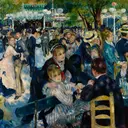
Bal du moulin de la GalettePierre-Auguste Renoir ⬇ - 59 L'Inondation à Port-MarlyAlfred Sisley ⬇
- 60 Rue de Paris, temps de pluieGustave Caillebotte ⬇
-
61
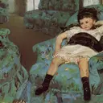
Petite Fille dans un fauteuil bleuMary Cassatt ⬇ -
62
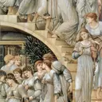
L'Escalier d'orEdward Burne-Jones ⬇ -
63
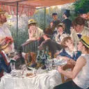
Le Déjeuner des canotiersPierre-Auguste Renoir ⬇ - 64 Un dimanche à la Grande JatteGeorges Seurat ⬇
- 65 La Jeune BergèreWilliam Bouguereau ⬇
- 66 Œillet, lis, lis, roseJohn Singer Sargent ⬇
- 67 Les TournesolsVincent van Gogh ⬇
- 68 Terrasse du café le soirVincent van Gogh ⬇
-
69
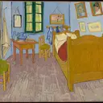
La Chambre à ArlesVincent van Gogh ⬇ -
70
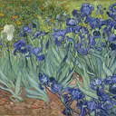
Les IrisVincent van Gogh ⬇ -
71
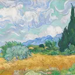
Champ de blé avec cyprèsVincent van Gogh ⬇ - 72 La Nuit étoiléeVincent van Gogh ⬇
-
73
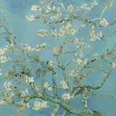
Amandier en fleursVincent van Gogh ⬇ - 74 Les MeulesClaude Monet ⬇
-
75
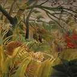
Surpris !Henri Rousseau ⬇ -
76
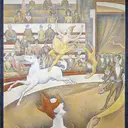
Le CirqueGeorges Seurat ⬇ - 77 Le CriEdvard Munch ⬇
- 78 Le Bain de l'enfantMary Cassatt ⬇
-
79
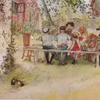
Petit-déjeuner sous le grand bouleauCarl Larsson ⬇ - 80 Le Boulevard Montmartre, la nuitCamille Pissarro ⬇
-
81
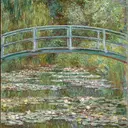
Le Pont japonaisClaude Monet ⬇ -
82
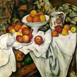
Pommes et orangesPaul Cézanne ⬇ - 83 Le Port de Saint-TropezPaul Signac ⬇
-
84
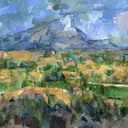
La Montagne Sainte-VictoirePaul Cézanne ⬇ - 85 Les NymphéasClaude Monet ⬇
- 86 L'Arbre de vieGustav Klimt ⬇
- 87 Promenade au bord de la merJoaquín Sorolla ⬇
- 88 Les Grands Chevaux bleusFranz Marc ⬇
-
89
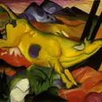
La Vache jauneFranz Marc ⬇ - 90 Cheval bleu IFranz Marc ⬇
- 91 Les Poissons rougesHenri Matisse ⬇
-
92
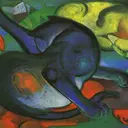
Deux Chats, bleu et jauneFranz Marc ⬇ - 93 SenecioPaul Klee ⬇
- 94 Composition VIIIWassily Kandinsky ⬇
- 95 Jaune-Rouge-BleuWassily Kandinsky ⬇
-
96
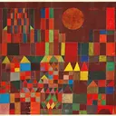
Château et soleilPaul Klee ⬇ - 97 Chat et oiseauPaul Klee ⬇
-
98
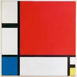
Composition en rouge, jaune et bleuPiet Mondrian ⬇ -
99
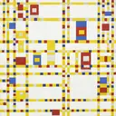
Broadway Boogie-WoogiePiet Mondrian ⬇ -
100
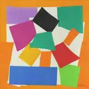
L'EscargotHenri Matisse ⬇
Prochaine étape
Choisis un premier tableau facile, imprime sa page et lance sa piste. Quand le dessin est fini, accroche-le au mur à côté du vrai tableau.
Pour un usage personnel, en famille ou en classe. La revente et la redistribution sont interdites.